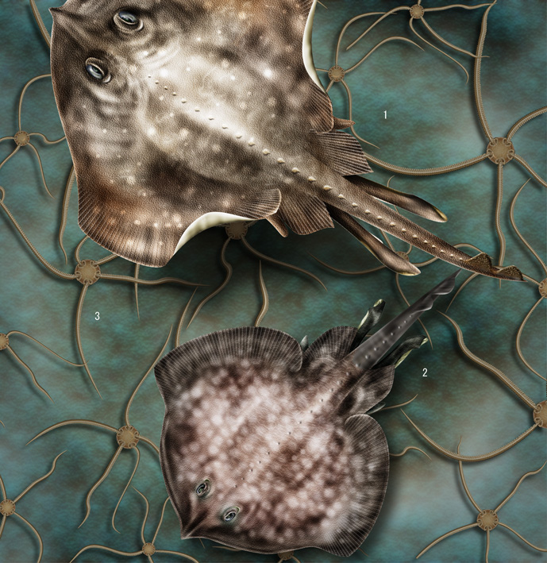

Peces bentónicos de la zona de transición 12 |
((RELLENAR CON INFORMACIÓN)) |
|  |
1. Raya de manchas blancas Bathyraja albomaculata 70-150cm 2. Raya de nariz ancha Bathyraja brachyurops 60-125cm 3. Ofiura detada Ophiura sarsii 3-5cm |
|